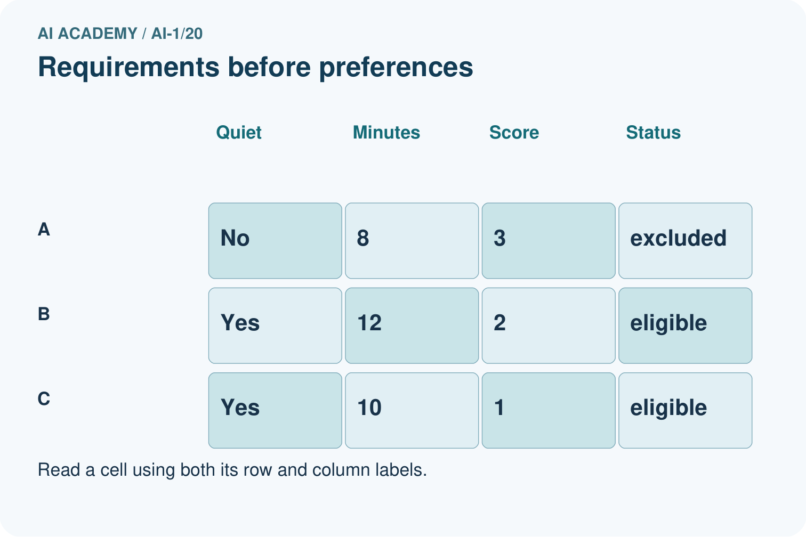
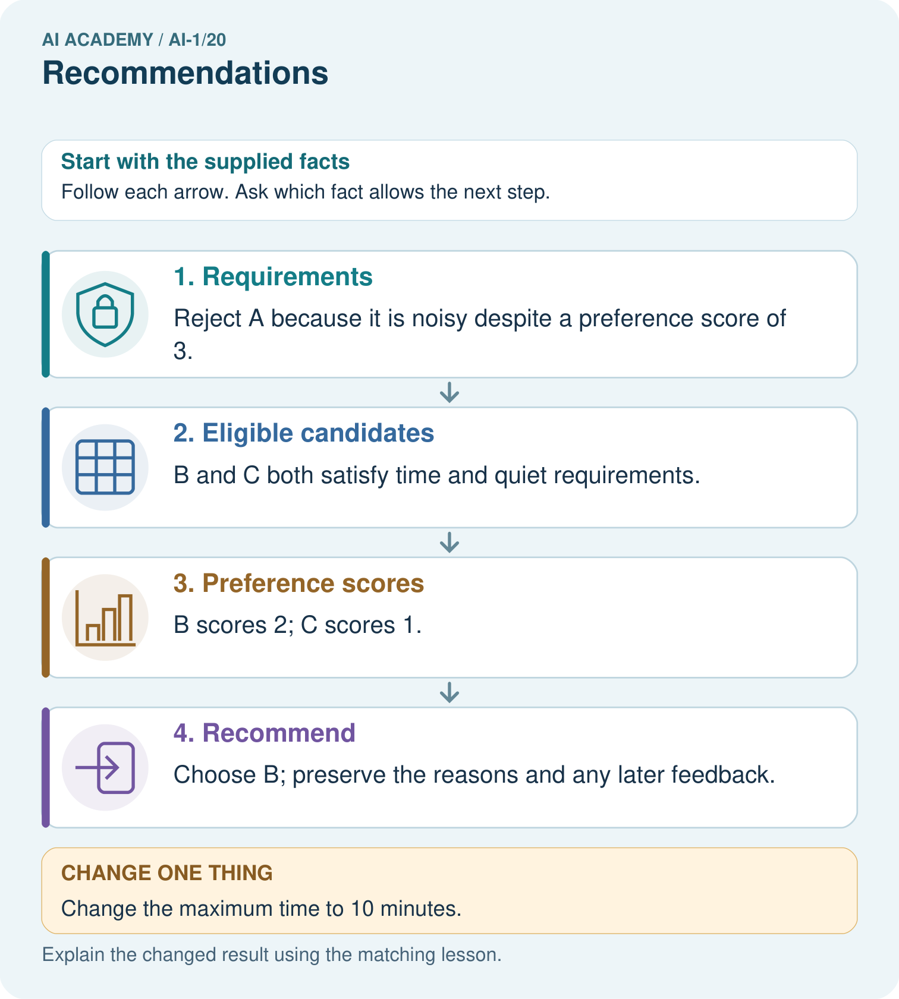

AI Academy · Level 1 · Grade 6 · Week 20 · Workbook
Recommendations
Learn to understand, design, build, test and explain AI systems responsibly.
Project: Helpful Classroom Sorter
Workbook · 1 of 18
Recall and choose your starting point
Try the recall before opening notes. Then use a different colour or a labelled second line to correct your explanation.
Similarity
Without opening the old lesson, explain one key idea from Similarity. Give an example and a mistake that the idea helps you avoid.
Prediction Is Not Fact
Without opening the old lesson, explain one key idea from Prediction Is Not Fact. Give an example and a mistake that the idea helps you avoid.
Build a Human Classifier
Without opening the old lesson, explain one key idea from Build a Human Classifier. Give an example and a mistake that the idea helps you avoid.
Workbook · 2 of 18
Practise with fading help
Use W2: Explain a recommendation honestly for Recommendations and feedback. Record the answer once; the lesson and workbook refer to the same attempt.
| Given inputs | Procedure I chose | Middle steps | Result and check |
|---|---|---|---|
Workbook · 3 of 18
Individual reasoning check
Use the worked case for Recommendations and feedback. Proposed explanation: “A high score can cancel a failed requirement”. Decide whether this explanation is supported. Point to the step or supplied fact that decides; explain your repair if needed.
Workbook · 4 of 18
Independent transfer case
Independent case: Transfer the process to activities
A fictional learner needs an indoor activity lasting at most 20 minutes. Preferences score 2 for drawing and 1 for solo. Candidates: A drawing, solo, outdoor, 10 minutes; B drawing, group, indoor, 20 minutes; C music, solo, indoor, 15 minutes; D drawing, group, indoor, 18 minutes. Filter, score and return all highest scorers. Only B is then shown and selected; C and D are not shown. State what the feedback establishes and what remains unknown.
Attempt this case before feedback. Record any help. Earlier examples below are further practice; a case already practised with feedback cannot establish fresh transfer.
Workbook · 5 of 18
Your learning target
A system shows only adventure books and records only adventure clicks. It concludes the reader dislikes poetry. Explain the missing evidence and propose a small test.
Workbook · 6 of 18
Solve the given case
A recommender suggests adventure books after one adventure-book choice.
Explain its evidence and limitation.
Show your trace, calculation or evidence
Workbook · 7 of 18
Check a changed case
A recommender suggests a space book because you liked two space books. Does the suggestion prove you will enjoy it? What feedback could help next time?
My independent answer and reason
Week 20 Test and reflect
Workbook · 8 of 18
Design a revealing test
Create a changed input, boundary case or missing-information case. Write the expected answer or safe response before testing.
| Test record | My evidence |
|---|---|
| Changed input or condition | |
| Expected answer or fallback | |
| Observed result | |
| Why the result occurred |
Workbook · 9 of 18
Project checkpoint
If the sorter ranks bins, state the objective and show why the top suggestion is not a command.
The project change and evidence I will keep
Workbook · 10 of 18
Self check
I can explain the mechanism. I can show evidence. I can handle a changed case. I can name a limit. Mark each as not yet, with help or independently, and attach supporting work.
Teacher review ____________________ Next step ____________________
Workbook · 11 of 18
Transfer practice from the original programme
A system shows only adventure books and records only adventure clicks. It concludes the reader dislikes poetry. Explain the missing evidence and propose a small test.
Record support used: none, hint or teacher explanation.
Workbook · 12 of 18
W1 Filter before scoring
Apply BookRec1 to J, K, L and M from the lesson. State eligibility or exclusion reason for each, the scores of eligible books and the recommendation. Explain why L’s two preference matches do not make it the winner.
Workbook · 13 of 18
W2 Explain a recommendation honestly
Write an explanation of why J was recommended that mentions one preference it does not match. A marketer adds guaranteed enjoyment. Explain why that phrase is unsupported.
Workbook · 14 of 18
W3 Do not label an unseen item rejected
J was shown and clicked. K was never shown. Separate the observed records from the labels enjoyed and disliked. Write a question that could gather a stated reason while allowing no answer.
Workbook · 15 of 18
W4 Transfer the process to activities
A fictional learner needs an indoor activity lasting at most 20 minutes. Preferences score 2 for drawing and 1 for solo. Candidates: A drawing, solo, outdoor, 10 minutes; B drawing, group, indoor, 20 minutes; C music, solo, indoor, 15 minutes; D drawing, group, indoor, 18 minutes. Filter, score and return all highest scorers. Only B is then shown and selected; C and D are not shown. State what the feedback establishes and what remains unknown.
Workbook · 16 of 18
W5 Handle an empty eligible set
Return to BookRec1. J and K become unavailable, L remains Spanish, and M’s availability becomes unknown. A designer proposes recommending M anyway because it matches both preferences. Apply the requirements and propose an honest response.
Workbook · 17 of 18
Feedback, return check and learning record
| Evidence | My record |
|---|---|
| Worked alone / hint / model | |
| First step I repaired and why | |
| New case checked later; date and result | |
| What I can now explain without notes | |
| One remaining question |
Revisit this idea with your teacher after a delay. Familiarity is different from explaining and using it on a changed case.
Workbook · 18 of 18
Pictorial case practice: Recommendations
A fictional classroom break chooser recommends a suitable paper activity.
Must be quiet and take at most 12 minutes. Score 2 for puzzles and 1 for solo.
A puzzle,solo,noisy,8 min; B puzzle,group,quiet,12 min; C drawing,solo,quiet,10 min.


Why does the recommendation change without changing anyone’s preferences?
Support used: alone / hint / worked example. This record is practice evidence.
Project connection: Separate sorter requirements, preferences and observed feedback; document why a suggestion was eligible.